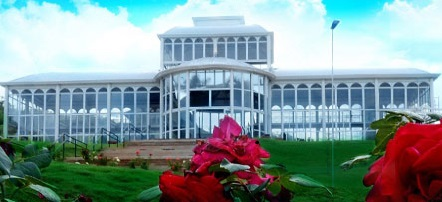
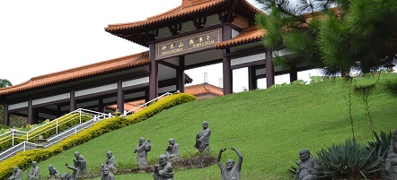
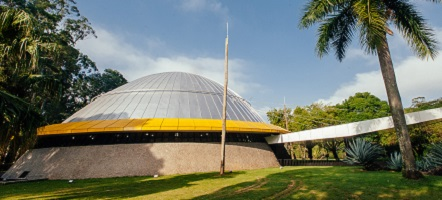

Tá sem grana mas está cansado de ficar só em casa vendo netflix e comendo besteiras, bora comigo conhecer esses lugares sem gastar quase nada? Chama a galera, vai ser legal...
Jardim Botânico de Sorocaba
Com aproximadamente 70 mil m² de área com vegetação de transição de Cerrado e Mata Atlântica com espécies locais e regionais, possui um Palacete de Cristal e 500m² de aréa. Está localizado entre as ruas Pedro Wurschig e Miguel M. Lozano, no Jardim Dois Corações. Aberto de Terça a Domingo das 09h às 17h.Entrada gratuita.
Templo Zu Lai em Cotia
Considerado o maior templo Budista da América Latina por seus 150 mil m² de área e 10 mil m² de área construida em estilo oriental dos palacios da Dinastia Tang integrado com a arquitetura ocidental moderna, o local. Está localizado na Estrada Fernando Nobre, 1461 - acesso pelo Km 28,5 da Rodovia Raposo Tavares. Aberto de Terça a Sexta das 12h às 17h, Sábados e Domingos das 09h às17h. Entrada e estacionamento gratuitos. Se você faz um estilo mais zen, vai gostar do lugar.
Planetario do Parque Ibirapuera em São Paulo
Do lado externo sua cúpula possui 9m de altura e 18 m de diâmetro que se destaca entre as árvores do parque.Seu acesso é feito pela Av. Pedro Alvares Cabral, S/N - Portão 3. As sessões acentecem aos Sábados, domingos e feriados, sempre às 10h, 12h, 15h, e 17h, com duração de 40 minutos. Entrada gratuita porem é preciso agendar e returar a senha de acesso 30 minutos antes do inicio da sessão. Para quem curte olar as estrelas, constelações, ou só ta afim de algo diferente é uma ótima pedida